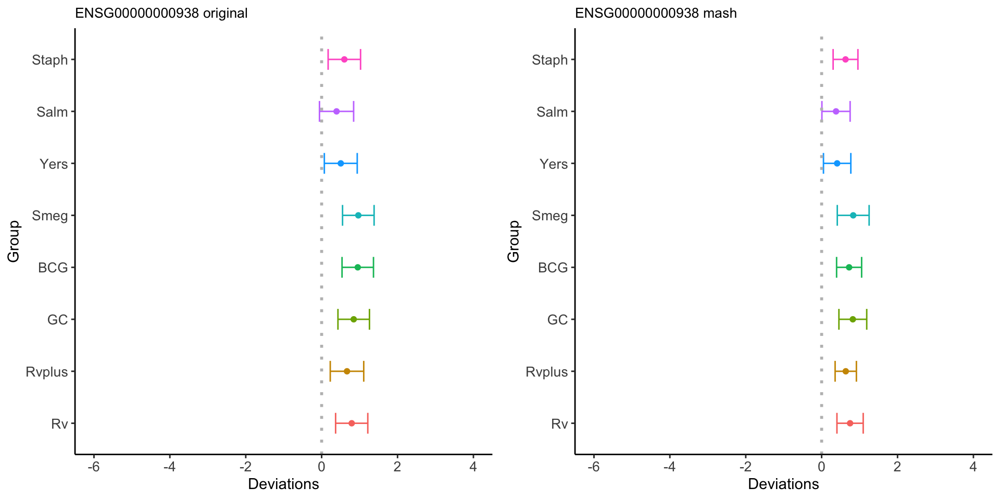
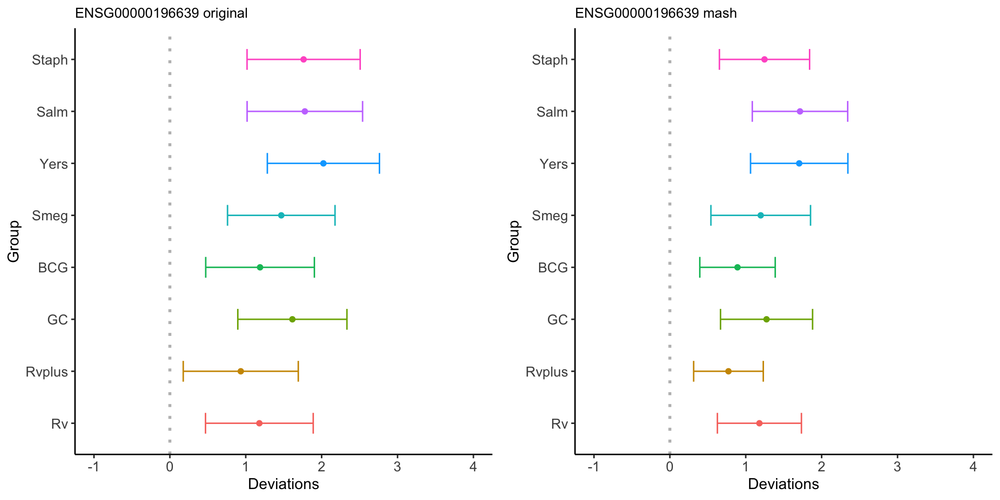

Expression 18 Mash - reprocessalltime - EE - joint mean
Yuxin Zou
2021-2-25
library(limma); library(mashr); library(plyr);## Loading required package: ashrlibrary(flashr); library(colorRamps); library(corrplot)## corrplot 0.84 loadedlibrary(ggplot2); library(ggpubr)##
## Attaching package: 'ggpubr'## The following object is masked from 'package:plyr':
##
## mutateImplement mash on John’s data at time point 18.
data = readRDS('../output/Expression_reprocessalltime18_joint.rds')
beta_class = data$beta
sebeta_class = data$sebeta
colnames(beta_class) = colnames(sebeta_class) = c('none', 'Rv', 'Rvplus', 'GC', 'BCG', 'Smeg', 'Yers', 'Salm', 'Staph')
mash.data = mash_set_data(beta_class, sebeta_class)
mash.data.L = mash_update_data(mash.data, ref='none')Top genes:
# find strong genes
m.1by1 = mash_1by1(mash.data.L, alpha=0)
strong = get_significant_results(m.1by1)
data.strong = mash_set_data(Bhat = beta_class[strong,], Shat = sebeta_class[strong,])
data.strong.L = mash_update_data(data.strong, ref = 'none')There are 5570 strong genes for at least one bacteria using ash condition-by-condition.
Estimate covariance structures
Data Driven:
Flash:
flash.data = flash_set_data(data.strong.L$Bhat)
fmodel = flash(flash.data, greedy = TRUE, backfit = TRUE)factors = flash_get_ldf(fmodel)$f
row.names(factors) = colnames(beta_class)[2:9]
pve.order = order(fmodel$pve, decreasing = TRUE)
par(mfrow=c(2,3))
for(i in pve.order){
barplot(factors[,i], main=paste0('Factor ',i, ' pve= ', round(fmodel$pve[i],3)), las=2, cex.names = 0.7)
}
par(mfrow=c(1,1))
Factors = fmodel$ldf$f
Flash_res = flash_get_fitted_values(fmodel)
U.Flash = c(mashr:::cov_from_factors(t(as.matrix(Factors)), "Flash"),
list("tFlash" = t(Flash_res) %*% Flash_res / nrow(Flash_res)))PCA:
U.pca = cov_pca(data.strong.L, 3)Canonical
U.c = cov_canonical(data.strong.L)Extreme Deconvolution
X.center = apply(data.strong.L$Bhat, 2, function(x) x - mean(x))
U.dd = c(U.pca, U.Flash, list('XX' = t(X.center) %*% X.center / nrow(X.center)))
saveRDS(cov_ed(data.strong.L, U.dd), '../output/Expression18_reprocessalltime_EE_jointmean_ED.rds')Mash model
U.ed = readRDS('../output/Expression18_reprocessalltime_EE_jointmean_ED.rds')U.dd.diag = c(U.ed[c('ED_tPCA', 'ED_tFlash', 'ED_XX')], lapply(U.ed[c('ED_PCA_1','ED_PCA_2','ED_PCA_3', paste0('ED_Flash_',1:7))], function(U) U + 0.01*diag(8)))
mash.model = mash(mash.data.L, c(U.c, U.dd.diag))
saveRDS(mash.model, '../output/Expression18_reprocessalltime_EE_jointmean_mash_model.rds') Result
mash.model = readRDS('../output/Expression18_reprocessalltime_EE_jointmean_mash_model.rds')The log-likelihood of fit is
get_loglik(mash.model)## [1] -28785.29Here is a plot of weights learned:
options(repr.plot.width=12, repr.plot.height=4)
barplot(get_estimated_pi(mash.model), las = 2, cex.names = 0.7)
There are 6377 differentially expressed genes.
Check tFlash covariance matrix
x <- mash.model$fitted_g$Ulist[["ED_tFlash"]]
colnames(x) <- colnames(beta_class)[2:9]
rownames(x) <- colnames(x)
corrplot(x, method='color', cl.lim=c(0,1), type='upper', addCoef.col = "black", tl.col="black", tl.srt=45, tl.cex = 0.7)layout(matrix(c(1,2,3,4), 2, 2, byrow=TRUE))
svd.out = svd(mash.model$fitted_g$Ulist[["ED_tFlash"]])
v = svd.out$v
colnames(v) = colnames(beta_class)[-1]
rownames(v) = colnames(v)
options(repr.plot.width=10, repr.plot.height=5)
for (j in 1:4)
barplot(v[,j]/v[,j][which.max(abs(v[,j]))], cex.names = 0.7,
las = 2, main = paste0("EigenVector ", j, " for ED_tFlash"))
png('../output/Expression18_EE_mash_model_tFlash_v1.png')
svd.out = svd(mash.model$fitted_g$Ulist[["ED_tFlash"]])
v = svd.out$v
colnames(v) = colnames(beta_class)[-1]
rownames(v) = colnames(v)
barplot(v[,1]/v[,1][which.max(abs(v[,1]))], cex.names = 0.7, las = 2,
main = paste0("EigenVector 1, pve=", round(svd.out$d[1]/sum(svd.out$d), 2)))
dev.off()Check tPCA covariance matrix
x <- mash.model$fitted_g$Ulist[["ED_tPCA"]]
colnames(x) <- colnames(beta_class)[2:9]
rownames(x) <- colnames(x)
corrplot(x, method='color', cl.lim=c(0,1), type='upper', addCoef.col = "black", tl.col="black", tl.srt=45, tl.cex = 0.7)layout(matrix(c(1,2,3,4), 2, 2, byrow=TRUE))
svd.out = svd(mash.model$fitted_g$Ulist[["ED_tPCA"]])
v = svd.out$v
colnames(v) = colnames(beta_class)[-1]
rownames(v) = colnames(v)
options(repr.plot.width=10, repr.plot.height=5)
for (j in 1:4)
barplot(v[,j]/v[,j][which.max(abs(v[,j]))], cex.names = 0.7,
las = 2, main = paste0("EigenVector ", j, " for ED_tPCA"))
Check pairwise sharing by magnitude and sign:
x = get_pairwise_sharing(mash.model)
x[x > 1] <- 1
x[x < -1] <- -1
colnames(x) <- colnames(beta_class)[-1]
rownames(x) <- colnames(x)
corrplot.mixed(x, tl.pos="d",upper='color', cl.lim=c(0,1), upper.col=colorRampPalette(rev(c("#D73027","#FC8D59","#FEE090","#FFFFBF",
"#E0F3F8","#91BFDB","#4575B4")))(40),
tl.cex=1.2)Check pairwise sharing by magnitude:
x = get_pairwise_sharing(mash.model, FUN = abs)
x[x > 1] <- 1
x[x < -1] <- -1
colnames(x) <- colnames(beta_class)[-1]
rownames(x) <- colnames(x)
corrplot.mixed(x, tl.pos="d",upper='color', cl.lim=c(0,1), upper.col=colorRampPalette(rev(c("#D73027","#FC8D59","#FEE090","#FFFFBF",
"#E0F3F8","#91BFDB","#4575B4")))(40),
tl.cex=1.2)Check pairwise sharing by sign:
x = get_pairwise_sharing(mash.model, factor=0)
x[x > 1] <- 1
x[x < -1] <- -1
colnames(x) <- colnames(beta_class)[-1]
rownames(x) <- colnames(x)
corrplot.mixed(x, tl.pos="d",upper='color', cl.lim=c(0,1), upper.col=colorRampPalette(rev(c("#D73027","#FC8D59","#FEE090","#FFFFBF",
"#E0F3F8","#91BFDB","#4575B4")))(40),
tl.cex=1.2)Genes
Yers-Salm cluster in Cormotif, significant in mash.
# before
gene1177 = data.frame(mash.data.L$Bhat[1177,])
colnames(gene1177) = 'Deviations'
gene1177$Group = factor(c('Rv', 'Rvplus', 'GC', 'BCG', 'Smeg', 'Yers', 'Salm', 'Staph'), levels = c('Rv', 'Rvplus', 'GC', 'BCG', 'Smeg', 'Yers', 'Salm', 'Staph'))
gene1177$se = mash.data.L$Shat[1177,]
gene1177$Deviations[gene1177$se == 0] = NA
# after
gene1177.post = data.frame(mash.model$result$PosteriorMean[1177,])
colnames(gene1177.post) = 'Deviations'
gene1177.post$Group = factor(c('Rv', 'Rvplus', 'GC', 'BCG', 'Smeg', 'Yers', 'Salm', 'Staph'), levels = c('Rv', 'Rvplus', 'GC', 'BCG', 'Smeg', 'Yers', 'Salm', 'Staph'))
gene1177.post$se = mash.model$result$PosteriorSD[1177,]
p.orig = ggplot(gene1177, aes(y = Deviations, x = Group, color=Group)) +
geom_point() + ylim(-1,3) +
geom_errorbar(aes(ymin=Deviations-1.96*se, ymax=Deviations+1.96*se), width=0.4) +
geom_hline(yintercept = 0, linetype="dotted", color = "grey", size=1) +
theme(panel.grid.major = element_blank(), panel.grid.minor = element_blank(),panel.background = element_blank(),axis.line = element_line(colour = "black"), legend.position = "none", plot.title = element_text(size = 10), axis.text=element_text(size=10)) + coord_flip() + ggtitle('ENSG00000079335 original' )
p.post = ggplot(gene1177.post, aes(y = Deviations, x = Group, color=Group)) +
geom_point() + ylim(-1,3) +
geom_errorbar(aes(ymin=Deviations-1.96*se, ymax=Deviations+1.96*se), width=0.4) +
geom_hline(yintercept = 0, linetype="dotted", color = "grey", size=1) +
theme(panel.grid.major = element_blank(), panel.grid.minor = element_blank(), panel.background = element_blank(),axis.line = element_line(colour = "black"), legend.position = "none", plot.title = element_text(size = 10), axis.text=element_text(size=10)) + coord_flip() + ggtitle('ENSG00000079335 mash')
ggarrange(p.orig, p.post, ncol=2, nrow=1, heights = c(5, 5), widths = c(5,5))Yers-Salm cluster in Cormotif, significant in mash.
# before
gene7637 = data.frame(mash.data.L$Bhat[7637,])
colnames(gene7637) = 'Deviations'
gene7637$Group = factor(c('Rv', 'Rvplus', 'GC', 'BCG', 'Smeg', 'Yers', 'Salm', 'Staph'), levels = c('Rv', 'Rvplus', 'GC', 'BCG', 'Smeg', 'Yers', 'Salm', 'Staph'))
gene7637$se = mash.data.L$Shat[7637,]
gene7637$Deviations[gene7637$se == 0] = NA
# after
gene7637.post = data.frame(mash.model$result$PosteriorMean[7637,])
colnames(gene7637.post) = 'Deviations'
gene7637.post$Group = factor(c('Rv', 'Rvplus', 'GC', 'BCG', 'Smeg', 'Yers', 'Salm', 'Staph'), levels = c('Rv', 'Rvplus', 'GC', 'BCG', 'Smeg', 'Yers', 'Salm', 'Staph'))
gene7637.post$se = mash.model$result$PosteriorSD[7637,]
p.orig = ggplot(gene7637, aes(y = Deviations, x = Group, color=Group)) +
geom_point() + ylim(-8,3) +
geom_errorbar(aes(ymin=Deviations-1.96*se, ymax=Deviations+1.96*se), width=0.4) +
geom_hline(yintercept = 0, linetype="dotted", color = "grey", size=1) +
theme(panel.grid.major = element_blank(), panel.grid.minor = element_blank(),panel.background = element_blank(),axis.line = element_line(colour = "black"), legend.position = "none", plot.title = element_text(size = 10), axis.text=element_text(size=10)) + coord_flip() + ggtitle('ENSG00000158488 original' )
p.post = ggplot(gene7637.post, aes(y = Deviations, x = Group, color=Group)) +
geom_point() + ylim(-8, 3) +
geom_errorbar(aes(ymin=Deviations-1.96*se, ymax=Deviations+1.96*se), width=0.4) +
geom_hline(yintercept = 0, linetype="dotted", color = "grey", size=1) +
theme(panel.grid.major = element_blank(), panel.grid.minor = element_blank(), panel.background = element_blank(),axis.line = element_line(colour = "black"), legend.position = "none", plot.title = element_text(size = 10), axis.text=element_text(size=10)) + coord_flip() + ggtitle('ENSG00000158488 mash')
ggarrange(p.orig, p.post, ncol=2, nrow=1, heights = c(5, 5), widths = c(5,5))All in Cormofit, non-significant in mash.
# before
gene4 = data.frame(mash.data.L$Bhat[4,])
colnames(gene4) = 'Deviations'
gene4$Group = factor(c('Rv', 'Rvplus', 'GC', 'BCG', 'Smeg', 'Yers', 'Salm', 'Staph'), levels = c('Rv', 'Rvplus', 'GC', 'BCG', 'Smeg', 'Yers', 'Salm', 'Staph'))
gene4$se = mash.data.L$Shat[4,]
gene4$Deviations[gene4$se == 0] = NA
# after
gene4.post = data.frame(mash.model$result$PosteriorMean[4,])
colnames(gene4.post) = 'Deviations'
gene4.post$Group = factor(c('Rv', 'Rvplus', 'GC', 'BCG', 'Smeg', 'Yers', 'Salm', 'Staph'), levels = c('Rv', 'Rvplus', 'GC', 'BCG', 'Smeg', 'Yers', 'Salm', 'Staph'))
gene4.post$se = mash.model$result$PosteriorSD[4,]
p.orig = ggplot(gene4, aes(y = Deviations, x = Group, color=Group)) +
geom_point() + ylim(-6,4) +
geom_errorbar(aes(ymin=Deviations-1.96*se, ymax=Deviations+1.96*se), width=0.4) +
geom_hline(yintercept = 0, linetype="dotted", color = "grey", size=1) +
theme(panel.grid.major = element_blank(), panel.grid.minor = element_blank(),panel.background = element_blank(),axis.line = element_line(colour = "black"), legend.position = "none", plot.title = element_text(size = 10), axis.text=element_text(size=10)) + coord_flip() + ggtitle('ENSG00000000938 original' )
p.post = ggplot(gene4.post, aes(y = Deviations, x = Group, color=Group)) +
geom_point() + ylim(-6, 4) +
geom_errorbar(aes(ymin=Deviations-1.96*se, ymax=Deviations+1.96*se), width=0.4) +
geom_hline(yintercept = 0, linetype="dotted", color = "grey", size=1) +
theme(panel.grid.major = element_blank(), panel.grid.minor = element_blank(), panel.background = element_blank(),axis.line = element_line(colour = "black"), legend.position = "none", plot.title = element_text(size = 10), axis.text=element_text(size=10)) + coord_flip() + ggtitle('ENSG00000000938 mash')
ggarrange(p.orig, p.post, ncol=2, nrow=1, heights = c(5, 5), widths = c(5,5))
All in Cormofit, significant in mash.
# before
gene11445 = data.frame(mash.data.L$Bhat[11445,])
colnames(gene11445) = 'Deviations'
gene11445$Group = factor(c('Rv', 'Rvplus', 'GC', 'BCG', 'Smeg', 'Yers', 'Salm', 'Staph'), levels = c('Rv', 'Rvplus', 'GC', 'BCG', 'Smeg', 'Yers', 'Salm', 'Staph'))
gene11445$se = mash.data.L$Shat[11445,]
gene11445$Deviations[gene11445$se == 0] = NA
# after
gene11445.post = data.frame(mash.model$result$PosteriorMean[11445,])
colnames(gene11445.post) = 'Deviations'
gene11445.post$Group = factor(c('Rv', 'Rvplus', 'GC', 'BCG', 'Smeg', 'Yers', 'Salm', 'Staph'), levels = c('Rv', 'Rvplus', 'GC', 'BCG', 'Smeg', 'Yers', 'Salm', 'Staph'))
gene11445.post$se = mash.model$result$PosteriorSD[11445,]
p.orig = ggplot(gene11445, aes(y = Deviations, x = Group, color=Group)) +
geom_point() + ylim(-1,4) +
geom_errorbar(aes(ymin=Deviations-1.96*se, ymax=Deviations+1.96*se), width=0.4) +
geom_hline(yintercept = 0, linetype="dotted", color = "grey", size=1) +
theme(panel.grid.major = element_blank(), panel.grid.minor = element_blank(),panel.background = element_blank(),axis.line = element_line(colour = "black"), legend.position = "none", plot.title = element_text(size = 10), axis.text=element_text(size=10)) + coord_flip() + ggtitle('ENSG00000196639 original' )
p.post = ggplot(gene11445.post, aes(y = Deviations, x = Group, color=Group)) +
geom_point() + ylim(-1, 4) +
geom_errorbar(aes(ymin=Deviations-1.96*se, ymax=Deviations+1.96*se), width=0.4) +
geom_hline(yintercept = 0, linetype="dotted", color = "grey", size=1) +
theme(panel.grid.major = element_blank(), panel.grid.minor = element_blank(), panel.background = element_blank(),axis.line = element_line(colour = "black"), legend.position = "none", plot.title = element_text(size = 10), axis.text=element_text(size=10)) + coord_flip() + ggtitle('ENSG00000196639 mash')
ggarrange(p.orig, p.post, ncol=2, nrow=1, heights = c(5, 5), widths = c(5,5))
All in Cormofit, significant in mash.
# before
gene2481 = data.frame(mash.data.L$Bhat[2481,])
colnames(gene2481) = 'Deviations'
gene2481$Group = factor(c('Rv', 'Rvplus', 'GC', 'BCG', 'Smeg', 'Yers', 'Salm', 'Staph'), levels = c('Rv', 'Rvplus', 'GC', 'BCG', 'Smeg', 'Yers', 'Salm', 'Staph'))
gene2481$se = mash.data.L$Shat[2481,]
gene2481$Deviations[gene2481$se == 0] = NA
# after
gene2481.post = data.frame(mash.model$result$PosteriorMean[2481,])
colnames(gene2481.post) = 'Deviations'
gene2481.post$Group = factor(c('Rv', 'Rvplus', 'GC', 'BCG', 'Smeg', 'Yers', 'Salm', 'Staph'), levels = c('Rv', 'Rvplus', 'GC', 'BCG', 'Smeg', 'Yers', 'Salm', 'Staph'))
gene2481.post$se = mash.model$result$PosteriorSD[2481,]
p.orig = ggplot(gene2481, aes(y = Deviations, x = Group, color=Group)) +
geom_point() +
geom_errorbar(aes(ymin=Deviations-1.96*se, ymax=Deviations+1.96*se), width=0.4) +
geom_hline(yintercept = 0, linetype="dotted", color = "grey", size=1) +
theme(panel.grid.major = element_blank(), panel.grid.minor = element_blank(),panel.background = element_blank(),axis.line = element_line(colour = "black"), legend.position = "none", plot.title = element_text(size = 10), axis.text=element_text(size=10)) + coord_flip() + ggtitle('ENSG00000105497 original' )
p.post = ggplot(gene2481.post, aes(y = Deviations, x = Group, color=Group)) +
geom_point() +
geom_errorbar(aes(ymin=Deviations-1.96*se, ymax=Deviations+1.96*se), width=0.4) +
geom_hline(yintercept = 0, linetype="dotted", color = "grey", size=1) +
theme(panel.grid.major = element_blank(), panel.grid.minor = element_blank(), panel.background = element_blank(),axis.line = element_line(colour = "black"), legend.position = "none", plot.title = element_text(size = 10), axis.text=element_text(size=10)) + coord_flip() + ggtitle('ENSG00000105497 mash')
ggarrange(p.orig, p.post, ncol=2, nrow=1, heights = c(5, 5), widths = c(5,5))Non-DE in Cormofit, significant in mash.
# before
gene19 = data.frame(mash.data.L$Bhat[19,])
colnames(gene19) = 'Deviations'
gene19$Group = factor(c('Rv', 'Rvplus', 'GC', 'BCG', 'Smeg', 'Yers', 'Salm', 'Staph'), levels = c('Rv', 'Rvplus', 'GC', 'BCG', 'Smeg', 'Yers', 'Salm', 'Staph'))
gene19$se = mash.data.L$Shat[19,]
gene19$Deviations[gene19$se == 0] = NA
# after
gene19.post = data.frame(mash.model$result$PosteriorMean[19,])
colnames(gene19.post) = 'Deviations'
gene19.post$Group = factor(c('Rv', 'Rvplus', 'GC', 'BCG', 'Smeg', 'Yers', 'Salm', 'Staph'), levels = c('Rv', 'Rvplus', 'GC', 'BCG', 'Smeg', 'Yers', 'Salm', 'Staph'))
gene19.post$se = mash.model$result$PosteriorSD[19,]
p.orig = ggplot(gene19, aes(y = Deviations, x = Group, color=Group)) +
geom_point() +
geom_errorbar(aes(ymin=Deviations-1.96*se, ymax=Deviations+1.96*se), width=0.4) +
geom_hline(yintercept = 0, linetype="dotted", color = "grey", size=1) +
theme(panel.grid.major = element_blank(), panel.grid.minor = element_blank(),panel.background = element_blank(),axis.line = element_line(colour = "black"), legend.position = "none", plot.title = element_text(size = 10), axis.text=element_text(size=10)) + coord_flip() + ggtitle('ENSG00000002549 original' )
p.post = ggplot(gene19.post, aes(y = Deviations, x = Group, color=Group)) +
geom_point() +
geom_errorbar(aes(ymin=Deviations-1.96*se, ymax=Deviations+1.96*se), width=0.4) +
geom_hline(yintercept = 0, linetype="dotted", color = "grey", size=1) +
theme(panel.grid.major = element_blank(), panel.grid.minor = element_blank(), panel.background = element_blank(),axis.line = element_line(colour = "black"), legend.position = "none", plot.title = element_text(size = 10), axis.text=element_text(size=10)) + coord_flip() + ggtitle('ENSG00000002549 mash')
ggarrange(p.orig, p.post, ncol=2, nrow=1, heights = c(5, 5), widths = c(5,5))Session information
This R Markdown site was created with workflowr